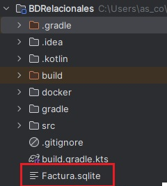

Operaciones sobre BD¶
En JDBC (Java Database Connectivity), las operaciones sobre la base de datos se realizan utilizando los objetos y métodos:
-
Connection, como ya se explicó en el apartado anterior, establece el canal de comunicación con el SGBD (PostgreSQL, MySQL, etc.)
-
Los objetos PreparedStatement y CreateStatement se utlizan para enviar consultas SQL desde tu programa hacia la base de datos, pero se usan de forma distinta y tienen ventajas diferentes.
-
ResultSet es un objeto que contiene el resultado de una consulta SQL, y permite recorrer fila a fila el conjunto de resultados, accediendo a cada campo por nombre o por posición.
-
Los métodos executeQuery() y executeUpdate() se utilizan para ejecutar sentencias SQL, pero se usan en contextos diferentes, dependiendo de si la consulta devuelve resultados o no.
PreparedStatement VS CreateStatement
| Si necesitas... | Usa... |
|---|---|
| Consultas sin parámetros | Statement |
| Consultas con datos del usuario | PreparedStatement |
| Seguridad frente a inyecciones SQL | PreparedStatement |
| Ejecutar muchas veces con distintos valores | PreparedStatement |
| Crear tablas o sentencias SQL complejas que no cambian | Statement |
Peticiones a la BD
Cuando una aplicación se conecta a una base de datos, necesita ejecutar sentencias SQL desde el código. En JDBC (Java/Kotlin), existen dos métodos principales para ello: executeQuery() y executeUpdate().
Ambos permiten enviar instrucciones SQL al gestor de base de datos, pero se usan en situaciones diferentes:
| Método | Uso principal | Tipo de sentencia SQL | Resultado que devuelve |
|---|---|---|---|
| executeQuery() | Realizar consultas | SELECT | Objeto ResultSet con los datos consultados |
| executeUpdate() | Realizar modificaciones | INSERT, UPDATE, DELETE, DDL (CREATE, DROP, etc.) | Un entero con el número de filas afectadas |
Utilizar estas instrucciones en un contexto diferente al mencionado, devolverá SQLException en su ejecución.
execute()
El método execute() en JDBC se utiliza principalmente en los siguientes casos:
- Cuando no se sabe de antemano qué tipo de sentencia SQL se va a ejecutar o si la consulta puede ser tanto de consulta como de modificación de datos.
- Para ejecutar sentencias SQL que pueden devolver varios resultados.
- En situaciones donde se necesita una gestión flexible de la ejecución, ya que execute() devuelve un booleano:
- true si el resultado es un ResultSet (SELECT).
- false si el resultado es un entero (INSERT, UPDATE, DELETE,CREATE, ALTER)
CRUD - Esquema de la BD - SQlite¶
En los siguientes apartados veremos cómo realizar operaciones CRUD (Crear, Leer, Actualizar y Borrar) sobre una base de datos utilizando SQLite como sistema de gestión y la base de datos de ejemplo Factura.sqlite, disponible en el apartado recursos.
A lo largo del ejemplo se desarrollarán las siguientes operaciones sobre estas tablas:
- Crear: insertar nuevos registros (por ejemplo, un nuevo artículo o cliente).
- Leer: realizar consultas para mostrar información ya almacenada.
- Actualizar: modificar registros existentes (como cambiar el precio de un artículo).
- Borrar: eliminar registros de la base de datos.
Este ejemplo práctico permitirá entender cómo se gestionan los datos desde una aplicación escrita en Kotlin conectada a una base de datos relacional ligera. Para ello, se trabajará con las tablas definidas en Factura.sqlite, entre las que se encuentran article, client, factura y linia_fac, tal y como se obverva en el esquema lógico y relacional de la siguiente imagen.
 |
|
El archivo de BD Factura.sqlite lo copiaremos en la carpeta resources del proyecto:

|Modificaciones¶
Las operaciones más habituales para modificar los datos en una base de datos relacional son las conocidas como CRUD:
- INSERT: Permite añadir nuevos registros a una tabla.
- UPDATE: Permite modificar los valores de uno o varios registros existentes.
- DELETE: Permite eliminar registros de una tabla.
Ejemplo_Insert.kt: Este fragmento añade un nuevo articulo "00001" a la tabla articles
import java.sql.DriverManager
fun main() {
val dbPath = "src/main/resources/Factura.sqlite"
val dbFile = java.io.File(dbPath)
println("Ruta de la BD: ${dbFile.absolutePath}")
val url = "jdbc:sqlite:${dbFile.absolutePath}"
DriverManager.getConnection(url).use { conn ->
val sql = "INSERT INTO article (cod_a, descrip) VALUES (?, ?)"
conn.prepareStatement(sql)
conn.prepareStatement(sql).use { stmt ->
stmt.setString(1, "00001")
stmt.setString(2, "articulo de prueba 1")
stmt.executeUpdate()
}
}
}
Ejemplo_Update.kt: Este código actualiza la descripción del artículo "00001"
import java.sql.DriverManager
fun main() {
val dbPath = "src/main/resources/Factura.sqlite"
val dbFile = java.io.File(dbPath)
println("Ruta de la BD: ${dbFile.absolutePath}")
val url = "jdbc:sqlite:${dbFile.absolutePath}"
DriverManager.getConnection(url).use { conn ->
val sql = "UPDATE article SET descrip = ? WHERE cod_a = ?"
conn.prepareStatement(sql).use { stmt ->
stmt.setString(1, "descripción nueva")
stmt.setString(2, "00001")
stmt.executeUpdate()
}
}
}
Ejemplo_Delete.kt: Este fragmento elimina el articulo "00001"
import java.sql.DriverManager
fun main() {
val dbPath = "src/main/resources/Factura.sqlite"
val dbFile = java.io.File(dbPath)
println("Ruta de la BD: ${dbFile.absolutePath}")
val url = "jdbc:sqlite:${dbFile.absolutePath}"
DriverManager.getConnection(url).use { conn ->
val sql = "DELETE FROM article WHERE cod_a = ?"
conn.prepareStatement(sql).use { stmt ->
stmt.setString(1, "00001")
stmt.executeUpdate()
}
}
}
Consultas¶
Las consultas permiten recuperar información, desde consultas simples hasta consultas complejas con filtros, ordenaciones y uniones entre tablas.
Ejemplo_basico.kt: Consulta la tabla article de la BD Factura.sqlite
import java.sql.DriverManager
fun main() {
val dbPath = "src/main/resources/Factura.sqlite"
val dbFile = java.io.File(dbPath)
println("Ruta de la BD: ${dbFile.absolutePath}") // Comprueba la ruta del archivo de la BD
val url = "jdbc:sqlite:${dbFile.absolutePath}"
DriverManager.getConnection(url).use { conn ->
val sql = "SELECT cod_a, descrip, preu, stock, stock_min FROM article"
conn.prepareStatement(sql).use { stmt -> //Envía la consulta
stmt.executeQuery().use { rs -> //Ejecuta la consulta
println("Artículos disponibles:")
println("Código\tDescripción\tPrecio\tStock\tStock Mínimo")
while (rs.next()) { //Obtiene el resultado de la consulta
val codA = rs.getString("cod_a")
val descrip = rs.getString("descrip")
val preu = rs.getDouble("preu")
val stock = rs.getInt("stock")
val stockMin = rs.getInt("stock_min")
println("$codA\t$descrip\t$preu\t$stock\t$stockMin")
}
}
}
}
}
Consultas complejas: JOIN, filtros y ordenaciones¶
Ejemplo_join.kt: Este ejemplo obtiene las líneas de factura con nombre del artículo y ordenado por numero de factura y línea.
import java.sql.DriverManager
fun main() {
val dbPath = "src/main/resources/Factura.sqlite"
val dbFile = java.io.File(dbPath)
val url = "jdbc:sqlite:${dbFile.absolutePath}"
DriverManager.getConnection(url).use { conn ->
val sql = """
SELECT lf.num_f, lf.num_l, lf.cod_a, a.descrip, lf.quant, lf.preu
FROM linia_fac lf
JOIN article a ON lf.cod_a = a.cod_a
ORDER BY lf.num_f, lf.num_l
""".trimIndent()
conn.prepareStatement(sql).use { stmt ->
stmt.executeQuery().use { rs ->
println("Líneas de factura:")
println("Factura | Línea | Artículo | Descripción | Cantidad | Precio")
while (rs.next()) {
val numF = rs.getInt("num_f")
val numL = rs.getInt("num_l")
val codA = rs.getString("cod_a")
val descrip = rs.getString("descrip")
val quant = rs.getInt("quant")
val preu = rs.getDouble("preu")
println("$numF\t$numL\t$codA\t$descrip\t$quant\t$preu")
}
}
}
}
}
Liberación de recursos¶
Cuando una aplicación accede a una base de datos, abre varios recursos internos que consumen memoria y conexiones activas en el sistema:
- La conexión con el servidor de base de datos (Connection)
- Las sentencias SQL preparadas (Statement o PreparedStatement)
- El resultado de la consulta (ResultSet)
Estos recursos no se liberan automáticamente cuando se termina su uso (especialmente en Java o Kotlin con JDBC). Si no se cierran correctamente, se pueden producir problemas como:
- Fugas de memoria
- Bloqueo de conexiones (demasiadas conexiones abiertas)
- Degradación del rendimiento
- Errores inesperados en la aplicación
En Kotlin, puedes usar use {} para cerrar recursos automáticamente al finalizar el bloque.
Si no utilizas use {} en Kotlin (o try-with-resources en Java), entonces debes cerrar manualmente cada uno de los recursos abiertos (ResultSet, Statement y Connection) usando .close(), y normalmente deberías hacerlo dentro de un bloque finally para garantizar su cierre incluso si ocurre un error. El orden correcto de cierre es del más interno al más externo.
Ejemplos para cerrar recursos abiertos sin use(), de forma manual y con el bloque try-catch-finally
Ejemplo_cierre_manual.kt: Cierra los recurso con close()
import java.sql.DriverManager
import java.sql.Connection
import java.sql.PreparedStatement
import java.sql.ResultSet
fun main() {
val dbPath = "src/main/resources/Factura.sqlite"
val dbFile = java.io.File(dbPath)
val url = "jdbc:sqlite:${dbFile.absolutePath}"
val conn: Connection = DriverManager.getConnection(url)
val sql = "SELECT cod_a, descrip, preu, stock, stock_min FROM article"
val stmt: PreparedStatement = conn.prepareStatement(sql)
val rs: ResultSet = stmt.executeQuery()
println("Artículos:")
println("Código\tDescripción\tPrecio\tStock\tStock mín.")
while (rs.next()) {
val codA = rs.getString("cod_a")
val descrip = rs.getString("descrip")
val preu = rs.getDouble("preu")
val stock = rs.getInt("stock")
val stockMin = rs.getInt("stock_min")
println("$codA\t$descrip\t$preu\t$stock\t$stockMin")
}
rs.close()
stmt.close()
conn.close()
}
Ejemplo_cierre_try_catch.kt: Cierra los reursos con try-catch-finally
import java.sql.Connection
import java.sql.DriverManager
import java.sql.PreparedStatement
import java.sql.ResultSet
fun main() {
val dbPath = "src/main/resources/Factura.sqlite"
val dbFile = java.io.File(dbPath)
val url = "jdbc:sqlite:${dbFile.absolutePath}"
var conn: Connection? = null
var stmt: PreparedStatement? = null
var rs: ResultSet? = null
try {
conn = DriverManager.getConnection(url)
val sql = "SELECT cod_a, descrip, preu, stock, stock_min FROM article"
stmt = conn.prepareStatement(sql)
rs = stmt.executeQuery()
println("Artículos:")
println("Código\tDescripción\tPrecio\tStock\tStock mín.")
while (rs.next()) {
val codA = rs.getString("cod_a")
val descrip = rs.getString("descrip")
val preu = rs.getDouble("preu")
val stock = rs.getInt("stock")
val stockMin = rs.getInt("stock_min")
println("$codA\t$descrip\t$preu\t$stock\t$stockMin")
}
} catch (e: Exception) {
println("Error al acceder a la base de datos: ${e.message}")
} finally {
try { rs?.close() } catch (e: Exception) { /* Ignorar */ }
try { stmt?.close() } catch (e: Exception) { /* Ignorar */ }
try { conn?.close() } catch (e: Exception) { /* Ignorar */ }
}
}